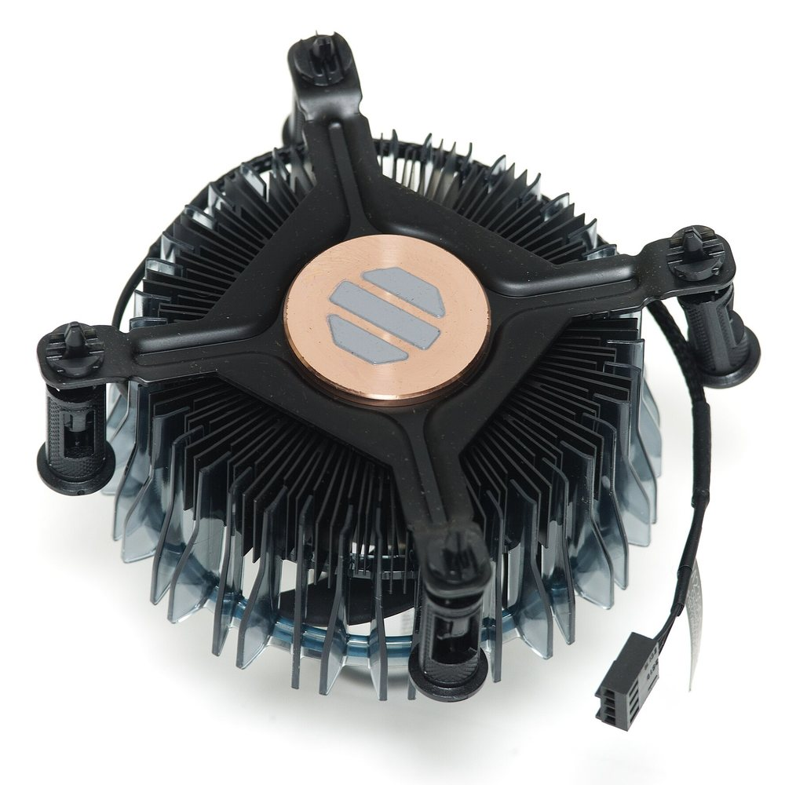
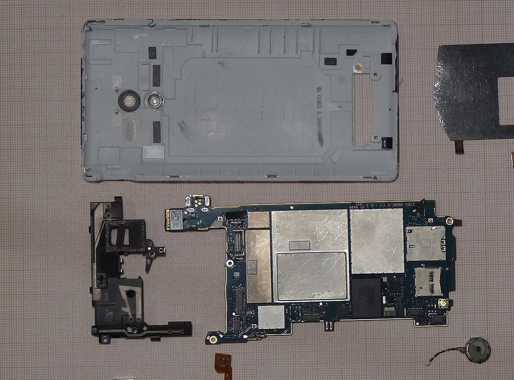

Guidesالأدلّة
Written to be followed on your own, in the order you should actually do things. Every one ends with when to stop and ask.
كُتبت لتتّبعها بنفسك، بالترتيب الذي ينبغي أن تفعل به الأمور فعلاً، وكلّ دليل ينتهي بمتى تتوقّف وتسأل.
Laptops and desktops
الحواسيب المحمولة والمكتبية
-
 My laptop will not turn onWhat to check, in the order that rules things out fastest, before you assume the worst.
حاسوبي المحمول لا يشتغلما ينبغي فحصه بالترتيب الذي يستبعد الاحتمالات أسرع، قبل أن تفترض الأسوأ.
My laptop will not turn onWhat to check, in the order that rules things out fastest, before you assume the worst.
حاسوبي المحمول لا يشتغلما ينبغي فحصه بالترتيب الذي يستبعد الاحتمالات أسرع، قبل أن تفترض الأسوأ.
- My computer has become very slowThree causes account for almost every slow machine, and you can check all three in ten minutes. حاسوبي صار بطيئاً جداًثلاثة أسباب تفسّر أغلب الأجهزة البطيئة، ويمكنك فحصها كلّها في عشر دقائق.
- My laptop gets hot and the fan is loudWhy it happens, what helps, and the one popular fix that makes it worse. حاسوبي المحمول يسخن والمروحة عالية الصوتلماذا يحدث ذلك وما الذي يفيد، والحلّ الشائع الوحيد الذي يزيد الأمر سوءاً.
- I spilled a drink on my laptopThe first ten minutes decide whether this is a cleaning or a new laptop. Do these in order, now. انسكب مشروب على حاسوبي المحمولالدقائق العشر الأولى تقرّر إن كان الأمر تنظيفاً أم حاسوباً جديداً، فافعل هذه بالترتيب الآن.
-

It shows a blue screen or restarts on its ownThe message on the screen is the clue. Here is how to capture it and what the common ones mean. تظهر شاشة زرقاء أو يعيد التشغيل من تلقاء نفسهالرسالة على الشاشة هي الدليل، وهكذا تلتقطها وهذا ما تعنيه الرسائل الشائعة.
Phones and tablets
الهواتف والأجهزة اللوحية
-

My phone says storage is fullIt is almost always photos and video, and you can free most of it without deleting anything you want. هاتفي يقول إنّ التخزين ممتلئهي الصور والفيديو في الغالب الأعمّ، ويمكنك تحرير أغلب المساحة دون أن تحذف شيئاً تريده. - My phone battery drains too fastHow to tell a worn battery from an app that is eating it, and what to do about each. بطارية هاتفي تنفد بسرعةكيف تفرّق بين بطارية استُهلكت وتطبيق يلتهمها، وما تفعل في كلّ حالة.
Websites
المواقع الإلكترونية
-
 My website will not loadThree things expire and take a site down with them. Check them in this order.
موقعي لا يفتحثلاثة أشياء تنتهي صلاحيتها وتُسقط الموقع معها، فافحصها بهذا الترتيب.
My website will not loadThree things expire and take a site down with them. Check them in this order.
موقعي لا يفتحثلاثة أشياء تنتهي صلاحيتها وتُسقط الموقع معها، فافحصها بهذا الترتيب.
-
 Is my website secure? The five minute checkFive things anyone can check without technical knowledge, and what a fail on each one means.
هل موقعي آمن؟ الفحص في خمس دقائقخمسة أمور يستطيع أيّ أحد فحصها دون معرفة تقنية، وما يعنيه الإخفاق في كلّ منها.
Is my website secure? The five minute checkFive things anyone can check without technical knowledge, and what a fail on each one means.
هل موقعي آمن؟ الفحص في خمس دقائقخمسة أمور يستطيع أيّ أحد فحصها دون معرفة تقنية، وما يعنيه الإخفاق في كلّ منها.
-
 My website is slowSlow sites lose visitors before they see anything. The three usual causes and how to see which is yours.
موقعي بطيءالمواقع البطيئة تخسر الزوّار قبل أن يروا شيئاً، وهذه الأسباب الثلاثة المعتادة وكيف تعرف أيّها عندك.
My website is slowSlow sites lose visitors before they see anything. The three usual causes and how to see which is yours.
موقعي بطيءالمواقع البطيئة تخسر الزوّار قبل أن يروا شيئاً، وهذه الأسباب الثلاثة المعتادة وكيف تعرف أيّها عندك.
Files and backups
الملفات والنسخ الاحتياطي
- I deleted files I need backMost deleted files can come back. Whether they do depends on what you do in the next hour. حذفت ملفات أحتاجهاأغلب الملفات المحذوفة يمكن استرجاعها، وذلك يتوقّف على ما تفعله في الساعة القادمة.
- Set up a backup that actually runsA backup you have to remember is not a backup. Here is the twenty minute setup that runs itself. إعداد نسخ احتياطي يعمل فعلاًالنسخة التي عليك أن تتذكّرها ليست نسخة احتياطية، وهذا إعداد في عشرين دقيقة يعمل من تلقاء نفسه.